Creative World 02 · Photography / Cinematography / Direction
I SEE
IN frames.
Sometimes I photograph what I find. Sometimes I build the frame from scratch. Either way, I'm always looking for the story hiding inside it.


REC 00:00:23:14
Sometimes I photograph what I find. Sometimes I build the frame from scratch. Either way, I'm always looking for the story hiding inside it.
Not categories. Instincts. The things that make me reach for a camera, stay with a frame, or imagine how a moment could move.
The kind that changes the entire mood of an ordinary room.
The moment before someone realises they are being observed.
Where every object, shadow and empty space earns its place.
A frame that makes you wonder what happened just before — or what happens next.
A visual diary of portraits, streets, details, places and accidental little scenes. Your real photographs will replace these frames.
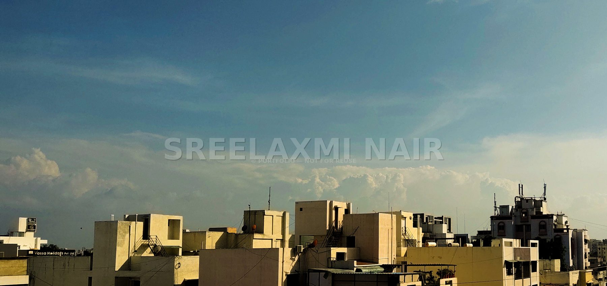
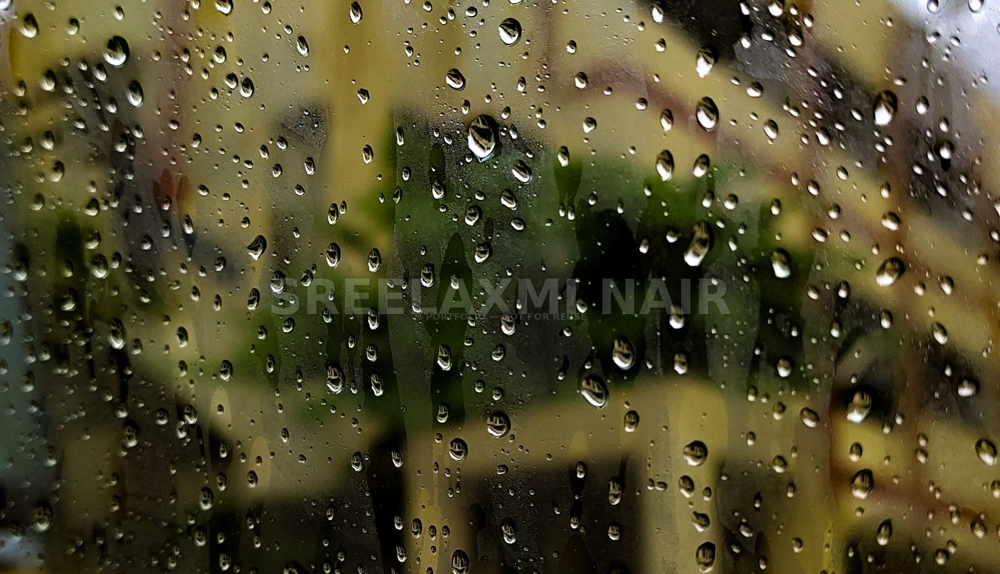
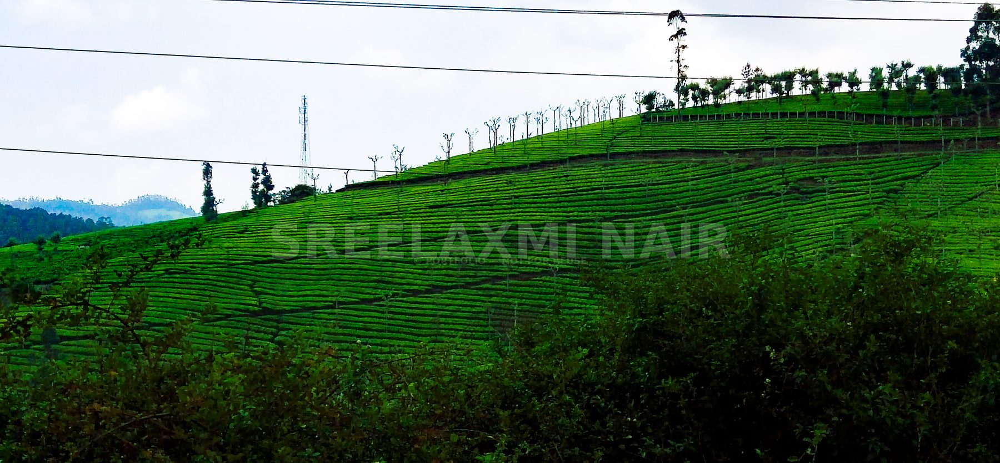
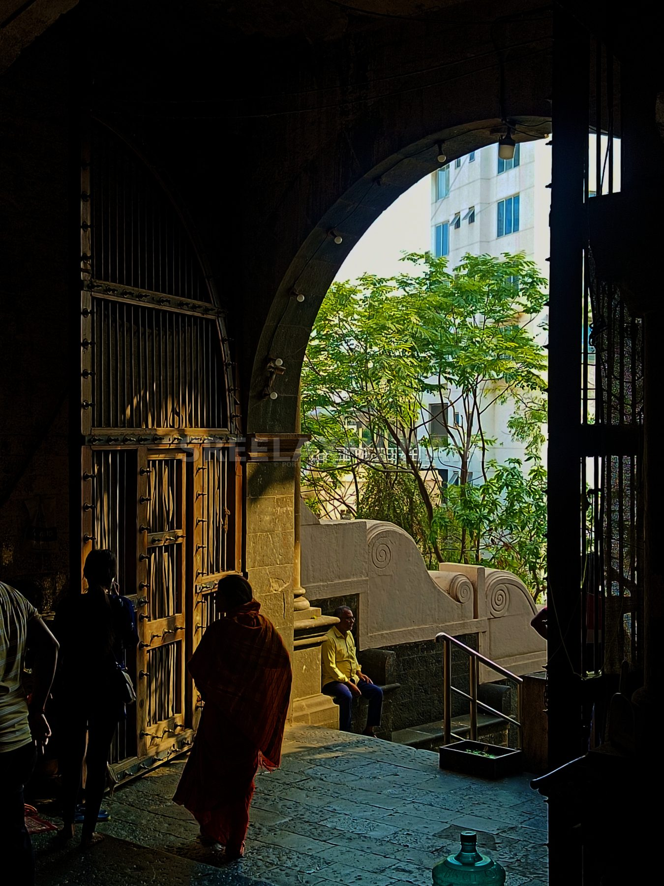
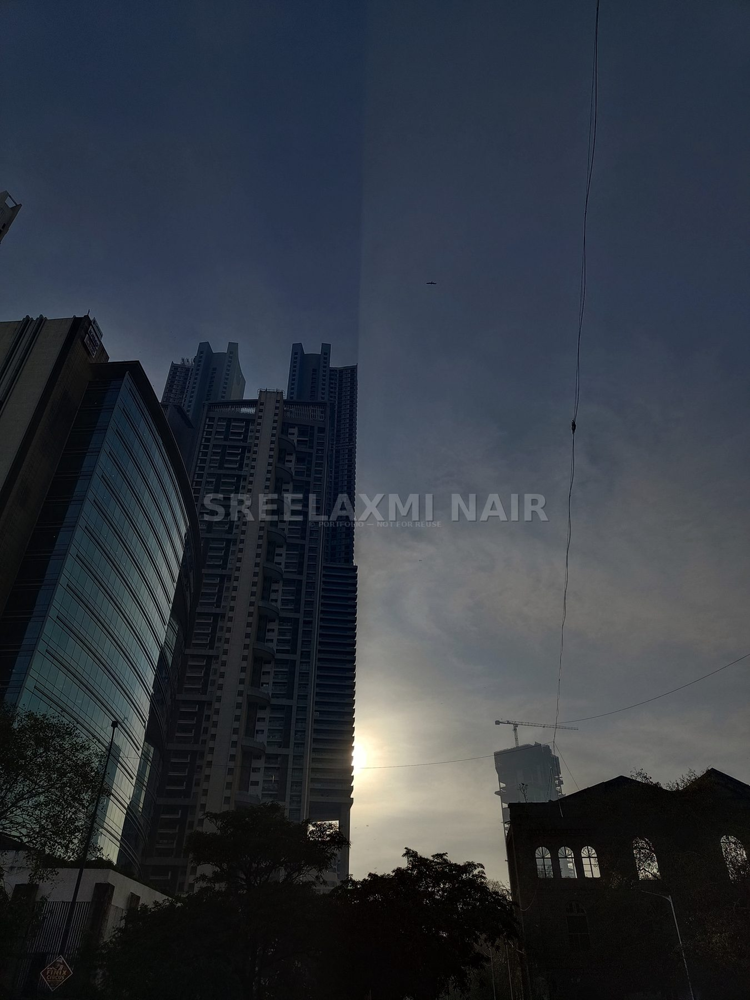
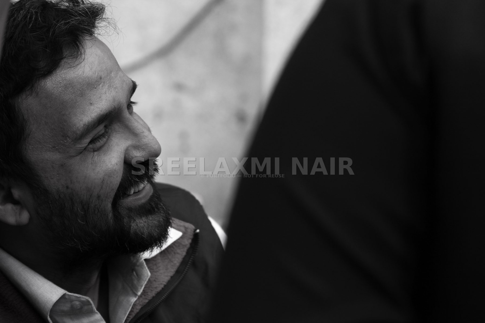
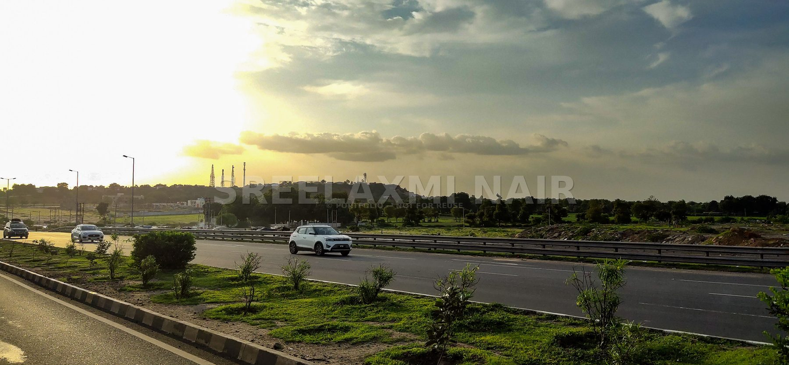
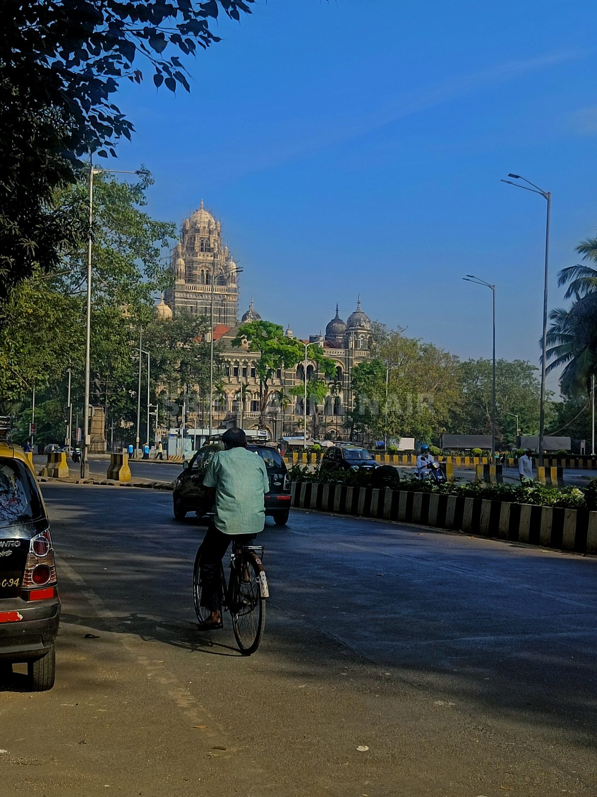
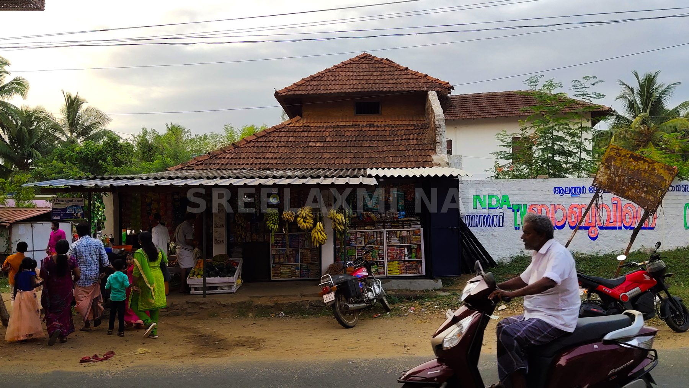
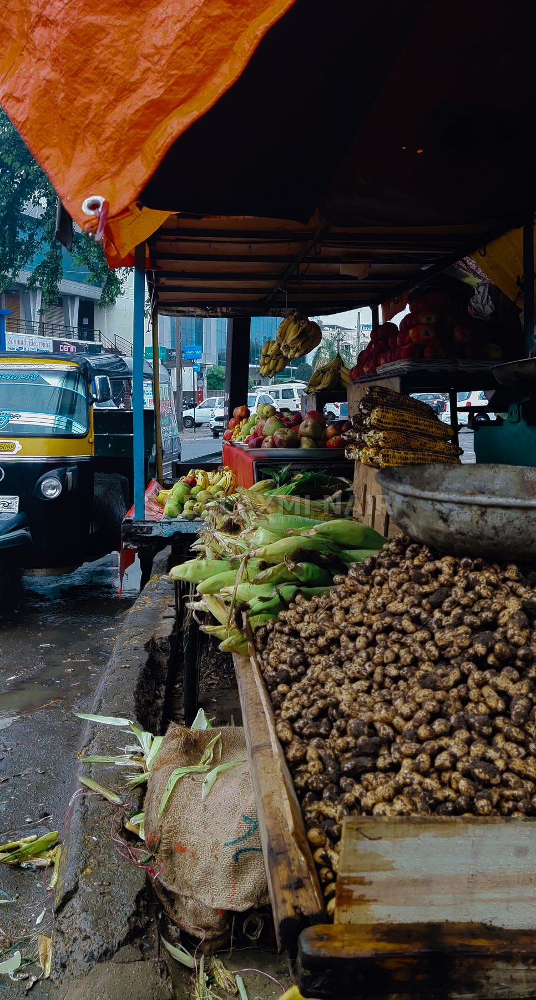
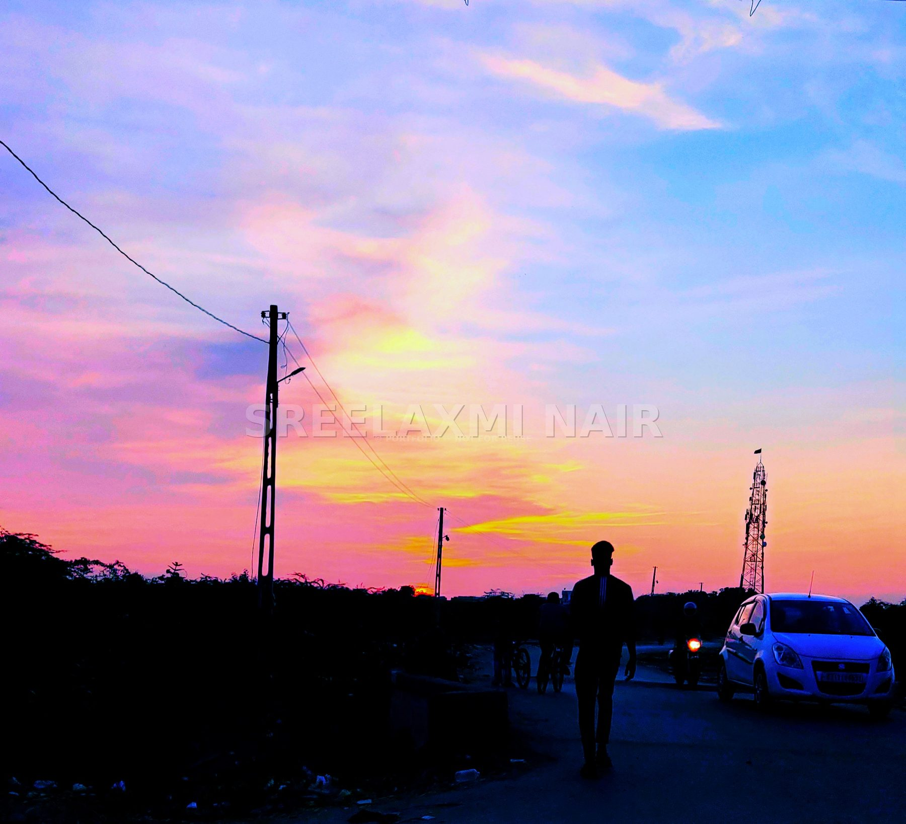
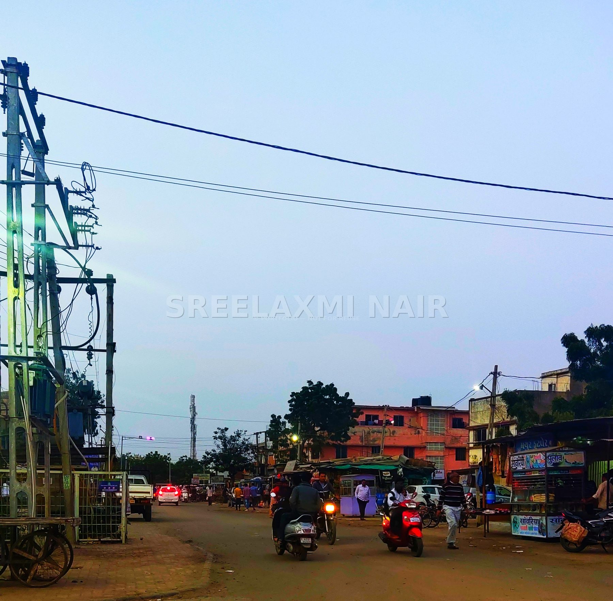
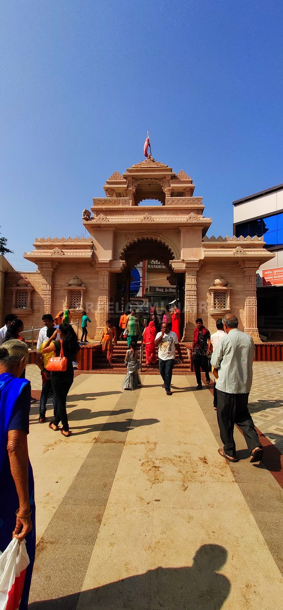
Little things that looked like cinema. A few seconds of rain, waiting, light, movement, people, roads — moments too small to become films but too good to lose.
sometimes with a camera. sometimes with a phone. sometimes just in my head.
← Back to all my worlds